Qalta App
AI Expense Tracker
Apple Pay automation
After an Apple Pay payment, Qalta can save the purchase as an expense. Amount and merchant come from the transaction; you can pick category and account each time, or set them in advance.
You need iOS 26, Qalta and Shortcuts, and cards in Wallet.
-
Open Settings → Wallet & Apple Pay. Turn on Live Activities and Cellular Data.
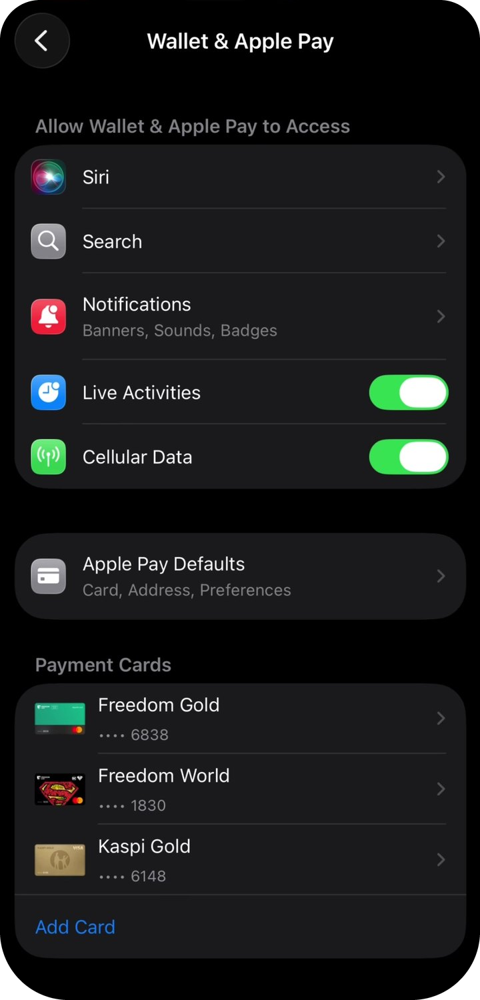
Wallet permissions -
Open Shortcuts, go to the Automation tab, and tap New Automation.
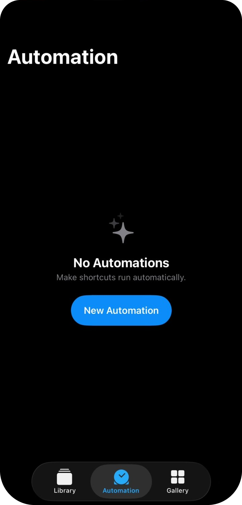
New automation -
Choose Wallet — “When I tap a Wallet Card or Pass” (payment at a terminal).
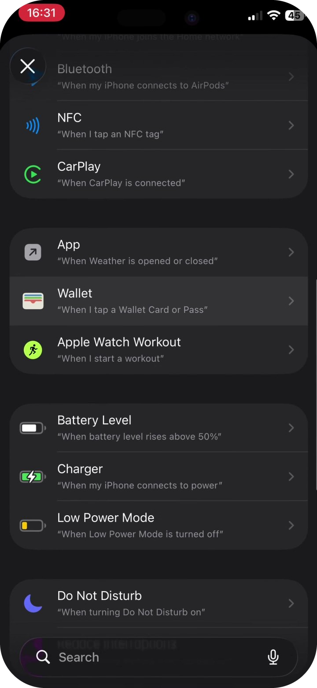
Wallet trigger -
Select the cards you want Qalta to track. Tap Next.
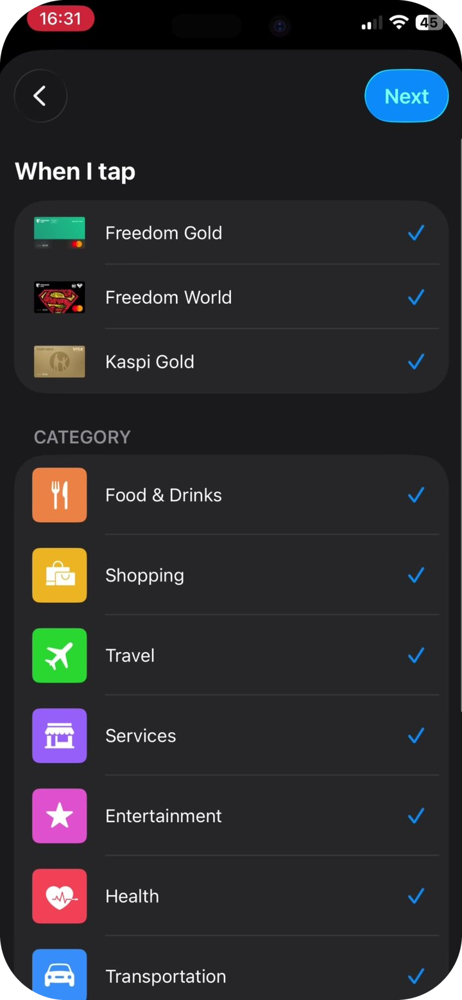
Which cards to track -
Keep the Wallet categories you care about (all is fine). Select Run Immediately (not Run After Confirmation). Tap Next.
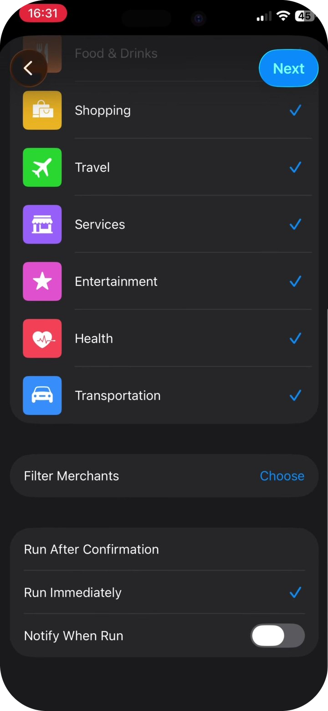
Categories -
On the tile screen, tap the gray Create New Shortcut card at the top left. Do not pick an existing shortcut from the list below.
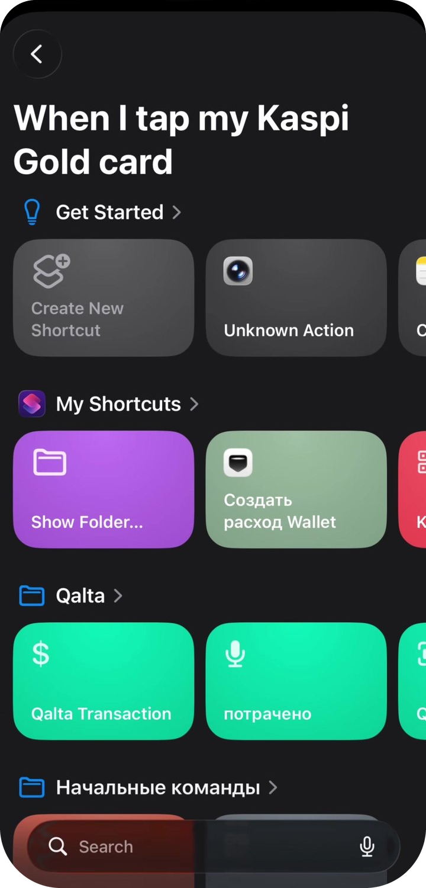
New shortcut -
An empty editor opens. In the action search at the bottom, type Qalta and tap Create Wallet Expense (not “Create Transaction”).
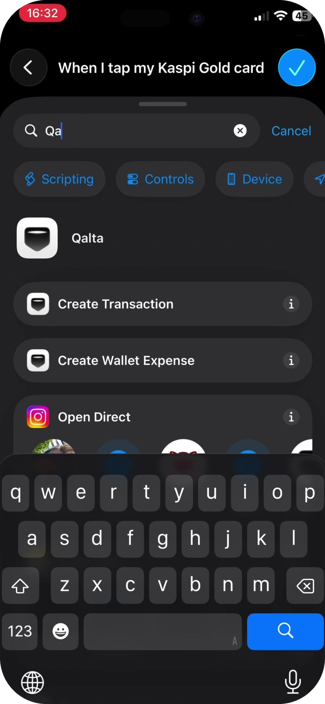
Qalta action -
You should see two blocks: “Receive transaction as input” and the Qalta action. Tap the gray Amount field in the Qalta action — a keypad appears. Above it, tap Select Variable.
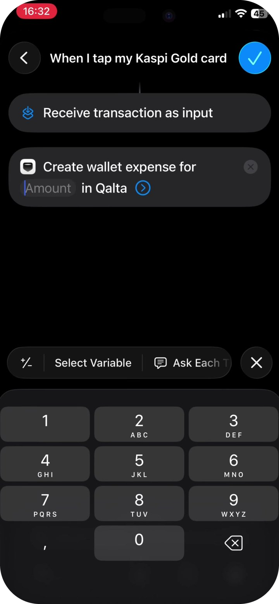
Tap Amount, then Select Variable -
On the Select Variable screen, tap the blue Shortcut Input chip under “Receive transaction as input”.
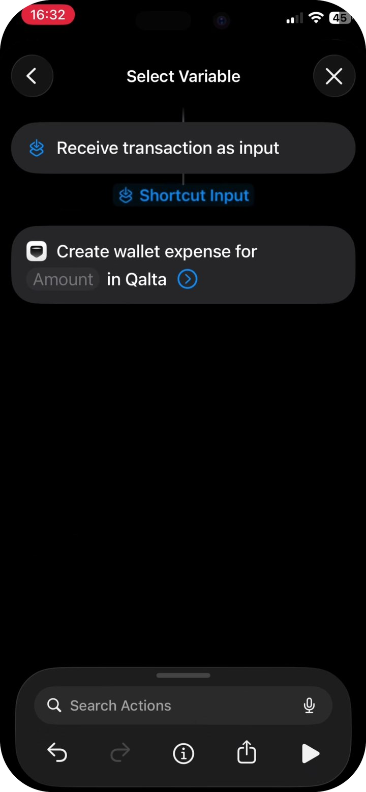
Shortcut Input -
Tap the blue Shortcut Input chip that now sits inside the Qalta action. In the sheet, Type should be Transaction. Do not leave the checkmark on “Transaction” — scroll the list and tap Amount.
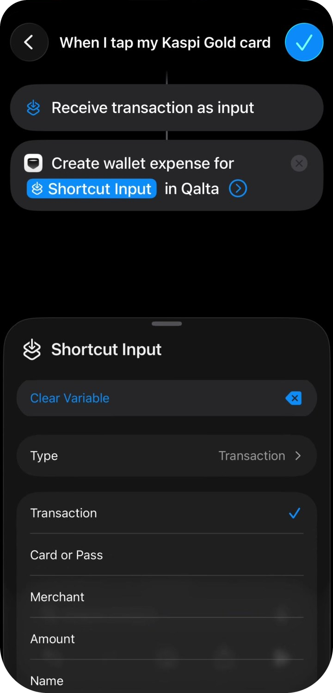
Type Transaction → Amount -
Repeat for the store name. Tap the chevron on the Qalta action to expand the fields. Tap Merchant → Select Variable → Shortcut Input. Tap the chip again, Type Transaction, then pick Merchant from the list.
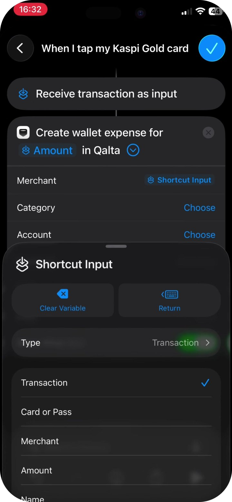
Type Transaction → Merchant -
The remaining fields are optional. Options for Category and Account:
- Choose — pick a specific category or account from Qalta. If you only have one account, do that: select it once. You do not need Ask Each Time.
- Ask Each Time — after each payment Qalta will ask where to save the expense. Useful if you have several categories or accounts.
- You can leave Choose empty — Qalta will use defaults and try to detect the category.
Currency, Note, and Date can stay empty. Turn on Show When Run so a confirmation appears after payment. Tap the blue checkmark at the top.
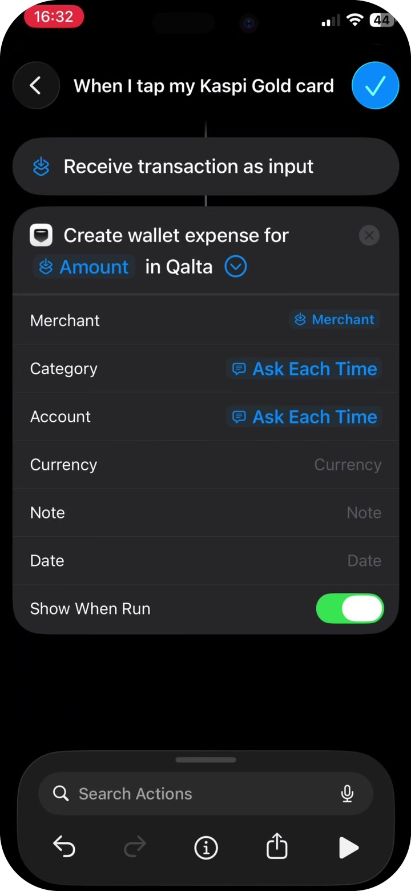
Category, account, and confirmation -
The automation appears under Automation. After your next Apple Pay purchase with the selected card, Qalta will offer to save the expense.
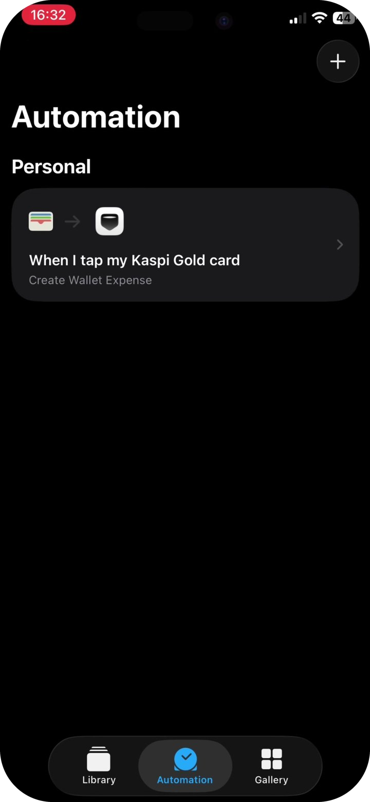
All set
Full video
Prefer to follow along on a screen recording?